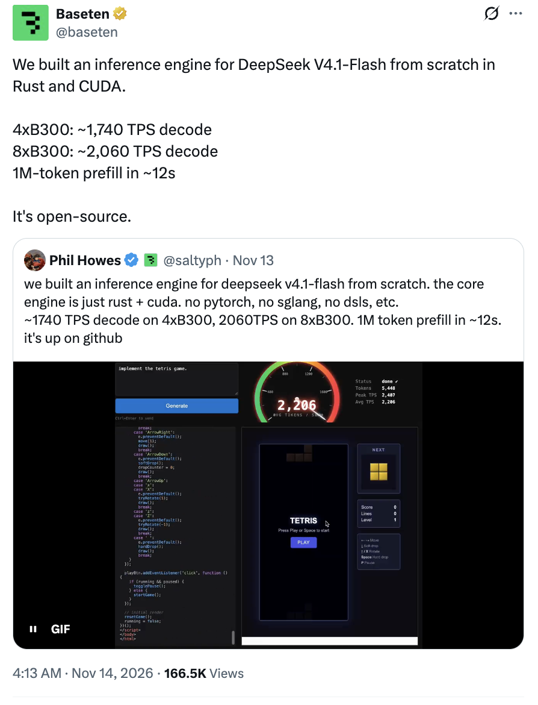
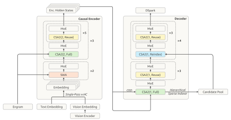
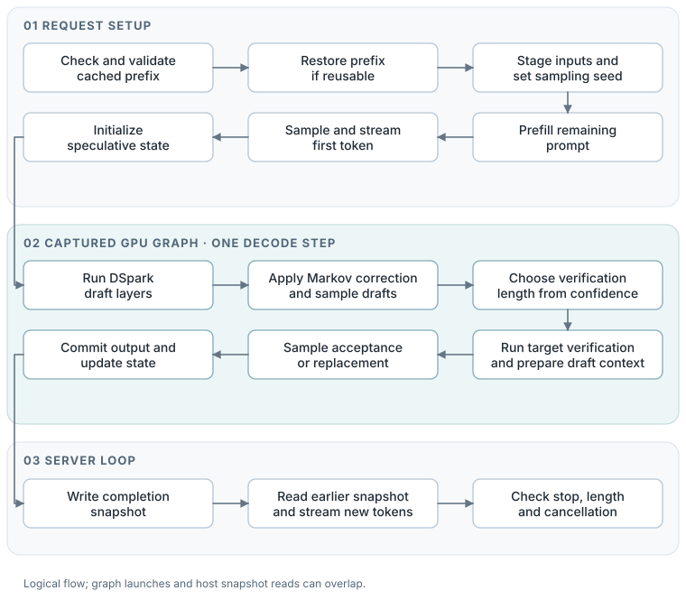
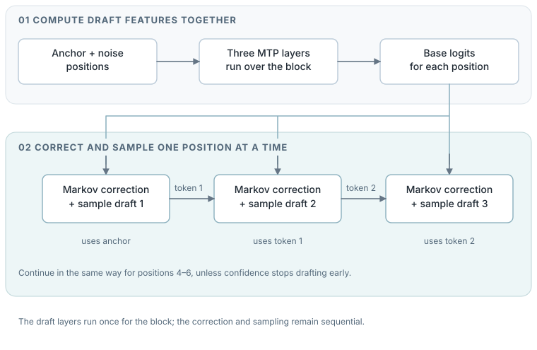
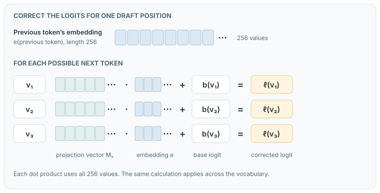
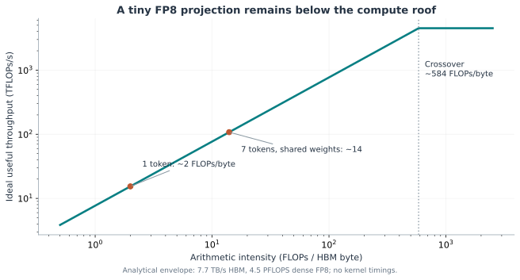

flowchart LR
A[Local projection or expert outputs] --> B[Publish payload and readiness]
B --> C[Cross-rank reduction]
C --> D[Weighted finalization / residual mixing]
D --> E[Next sublayer input]
I reverse engineered baseten’s 2000TPS inference engine
Following the Rust, CUDA, and arithmetic behind DeepSeek Ultrafast
LLMs
Inference
CUDA
A detailed source-code investigation of Baseten’s 2,000-token/s engine: speculative decoding, Blackwell rooflines, sparse experts, fused communication, model-aware prefill, and the tradeoffs behind the headline.
Baseten posted that it had built an inference engine for DeepSeek-V4.1-Flash in Rust and CUDA, reaching around 2,060 tokens per second on eight B300 GPUs. It also reported prefilling a million tokens in roughly twelve seconds.

I wanted to understand how this was possible. Getting even 500 TPS is hard. I was curious to learn about the design choices and optimizations that lead to such insanely fast inference. Lucky for us, they open sourced the code.
The DeepSeek-V4.1-Flash architecture
DeepSeek-V4.1-Flash is a causal encoder-decoder model. Its first 20 layers form the encoder, and the next 20 form the decoder. The decoder uses context supplied by the encoder, while a candidate pool feeds later sparse-indexing layers. The architecture also includes mixture-of-experts (MoE) layers and DSpark, a draft model used for speculative decoding.
The diagram from the DeepSeek-V4.1-Flash paper shows how these components fit together:

The inference configuration gives the dimensions of these components:
| Component | Configuration |
|---|---|
| Target backbone | 40 layers, hidden dimension 5,120 |
| Routed MoE | 384 experts per layer, 6 selected per token |
| Expert intermediate dimension | 2,304 |
| Attention | 64 heads, head dimension 512 |
| Sliding window | 128 tokens |
| Main KV source layers | 2, 8, 14, 20, using zero-based indices |
| Sparse attention selection | Index top-k of 512 |
| DSpark drafter | 3 MTP layers, 128 experts, top-3 routing |
| Markov correction | Rank 256 |
| Vocabulary | 129,280 |
The model description also identifies shared global KV, sparse indexing, bounded sliding-window replay and Engram conditional lookup memory as architectural features. These affect how much work the engine needs to do, particularly when processing a long prompt.
The model stores hundreds of billions of expert weights. How many does it use for one token?
Consider just the routed feed-forward experts. With hidden dimension \(d=5120\) and intermediate dimension \(h=2304\), one expert’s three matrices (gate projection \(W_1\), up projection \(W_3\), and down projection \(W_2\)) contain
\[ P_e=3dh=3\times5120\times2304=35{,}389{,}440 \]
weights. The three matrices supply the two SwiGLU input projections and the output projection.
Across forty layers and 384 routed experts per layer, that becomes
\[ 40\times384\times P_e=543{,}581{,}798{,}400 \]
routed-expert weights. But a single target token selects six experts per layer:
\[ 40\times6\times P_e=8{,}493{,}465{,}600. \]
Those 8.49 billion weights cover only the routed experts. The model also uses shared experts, attention projections, output heads and other components. Engram adds a large lookup table, but each token accesses only selected entries.
Baseten’s README reports both the output rate and the average time for one step of the engine’s generation loop:
| Configuration in the README | Decode rate | Average step time |
|---|---|---|
| 4 × GB300, TP4 | 1,740 tokens/s | 3.30 ms |
| 8 × B300, TP8 | 2,060 tokens/s | 2.71 ms |
TP4 and TP8 mean that one model execution is distributed across four or eight GPUs using tensor parallelism. These are GPUs cooperating on one request, rather than four or eight independent copies each producing that rate.
B300 vs. GB300
Both use Blackwell Ultra GPUs. An HGX B300 server connects eight GPUs to x86 CPUs. A GB300 NVL72 rack connects 72 GPUs to NVIDIA Grace CPUs. Both use NVLink to connect their GPUs. Baseten’s “4 × GB300” result uses four GPUs from a GB300 system, not the entire rack. More on the system differences.
The decode example generates HTML for a Tetris game, with thinking disabled in the reproduction request. The README’s million-token prefill is a separate result. It does not establish that the Tetris decode rate was achieved with a million tokens already in context.
What does 2,060 tokens per second require? Dividing one second by the output rate gives an average time per emitted token:
\[ \frac{1000\ \mathrm{ms}}{2060\ \mathrm{tokens}} \approx0.485\ \mathrm{ms/token}. \]
How many output tokens does the engine get from each step? We can work that out from 0.485 ms per emitted token, calculated above, and 2.71 ms per step, reported by Baseten.
What is step time?
A decode step is one run of the engine’s generation loop. The code also calls this an iteration; both terms mean the same thing. I’ll use step throughout this post. Step time is how long one step takes. Baseten reports an average of 2.71 ms per step on eight B300 GPUs, excluding the initial prompt-processing phase (prefill). A step can produce more than one output token, so step time and time per token can differ.
What happens in one step? I followed the decode loop to capture_spec and found three main calls:
dspark_draft() → verify_prep(...) → spec_acceptThe engine drafts tokens, checks them with the target model and commits the result. The reported 2,060 TPS and 2.71 ms per step imply
\[ 2060\times0.00271\approx5.58\ \mathrm{tokens/step}. \]
Each step takes an average of 2.71 ms, so the number of steps per second is
\[ \frac{1000\ \mathrm{ms/s}}{2.71\ \mathrm{ms/step}} \approx369\ \mathrm{steps/s}. \]
So the engine runs about 369 steps per second, producing around 5.6 tokens each. But what are those 5.6 tokens? To understand that, we need to look more closely at what happens during speculative decoding.
What does acceptance length count?
In ordinary decoding, the main model generates one token, then uses that token to generate the next one. Speculative decoding adds a smaller draft model that proposes several tokens ahead. The main model, also called the target model, then checks those proposals together.
The engine commits a prefix of the draft and one additional token. If the selected prefix ends before the draft does, that additional token replaces the next draft token. For example:
Draft: A B C D
Accepted: A B C
Replacement: X
Output: A B C XThe output has 3 accepted draft tokens plus 1 replacement. This illustrates the count, not the acceptance algorithm: Baseten uses a block sampler that selects a prefix using probabilities, as we will see below.
What if all four draft tokens are accepted? The target has also computed a distribution for the position after D, so the engine can sample one more token from it:
Draft: A B C D
Accepted: A B C D
Next token: X
Output: A B C D XHere the step produces 4 accepted draft tokens plus 1 new token. If no draft tokens are accepted, the step still produces a replacement.
The request logger calls the average number of output tokens per step the average acceptance length:
\[ \frac{\mathrm{accepted\ draft\ tokens}}{\mathrm{steps}} + 1\ \mathrm{token/step}. \]
An acceptance length of 5.6 tokens/step therefore means approximately 4.6 accepted draft tokens/step + 1 additional token/step.
The README gives 5.6 as a summary across both configurations. Dividing it by the reported step times gives about 2,066 TPS at 2.71 ms and 1,697 TPS at 3.30 ms, close to but not exactly the headline rates of 2,060 and 1,740 TPS. These reported summaries are approximate.
The tokens from a step can also arrive together when streamed. An average of 0.485 ms per token does not mean a token arrives every 0.485 ms.
How does the engine draft and verify a block in 2.71 ms? Let’s follow a request into the decode loop.
From a prompt to generated tokens
The server’s rank workers share a job. Before decoding, they check for a reusable prompt prefix, run prefill and initialize the speculative state. Each decode step then replays a captured GPU graph:

A CUDA graph records a sequence of GPU operations so the server can launch them together. Here, one replay runs a speculative step: draft tokens, verify them, and commit the result.
After each step, the server reads a snapshot of the GPU’s progress and streams any new tokens. It can launch another step while reading an earlier snapshot, so the diagram shows the flow of work rather than a strict timeline. The loop continues until the request finishes.
How does Baseten produce several tokens per step?
DeepSeek’s DSpark drafter proposes several tokens for the target to check together. This is faster only if drafting and verifying them takes less time than generating them one at a time.
Why can the target check several tokens at once?
During ordinary decoding, the model must sample one token before it knows the input for the next. With a draft, the proposed tokens are already available. The target can process their positions together under a causal mask, then decide which proposals to keep.
DeepSeek includes a model-native proposer called DSpark. In this implementation, target features are collected from layers 37, 38, and 39. The preparation path projects those features and constructs the drafter’s KV context. The three small draft transformer layers, called MTP layers in the code, compute draft features for a block containing the current anchor and noise-token positions.
On SM103, the Blackwell Ultra device profile, the configuration override sets the draft limit to six tokens. To verify all six, the target model receives the current token, called the anchor, followed by the six draft tokens. It processes those seven tokens together.
How does the engine draft six tokens without six draft-model passes?
The draft path runs the three MTP layers over the block together. But each proposed token still needs to account for the token sampled before it. Baseten handles that dependency in the Markov kernel: instead of rerunning all three draft layers for each position, it adds a smaller, rank-256 correction to that position’s precomputed logits. The correction and sampling still run sequentially, and they still touch the vocabulary; the saving is avoiding another full draft-model pass for every candidate.

How the Markov correction works
For a candidate token \(v\) at draft position \(r\), the correction is
\[ \ell_r(v)=b_r(v)+\langle e(y_{r-1}),M_v\rangle, \qquad q_r=\operatorname{softmax}(\ell_r/T). \]
Here \(b_r\) comes from the parallel draft computation, \(e(y_{r-1})\) is the previous sampled token’s Markov embedding, and \(M_v\) is the projection vector for vocabulary item \(v\).

The diagram shows one draft position and three vocabulary tokens. The same previous-token embedding is used for every candidate; each candidate has its own projection vector and base logit. The corrected logits determine the distribution used to sample the next draft token.
The implementation shards the vocabulary across TP ranks. Each rank evaluates its portion, combines candidate information across ranks, and agrees on the next token. For sampling it adds Gumbel noise to corrected logits and selects a maximum. Ignoring finite-precision effects, the Gumbel-max identity gives
\[ y_r=\arg\max_v\left(\ell_r(v)/T+G_v\right), \qquad G_v\sim\operatorname{Gumbel}(0,1). \]
This samples from the distribution using scores that each GPU can calculate locally and then reduce across ranks. The kernel also saves the draft logits and normalization statistics needed for verification.
There is another reuse opportunity in the code. The _ld kernel loads chunks of Markov weights into shared memory before the sequential loop and reuses them across draft positions; another kernel handles shapes that cannot use this variant. This reduces repeated loading inside the draft tail, but the source alone cannot tell us how many milliseconds it saves.
DSpark and the Markov head are model features, not inventions unique to Baseten. SGLang implements the same model-specific head. The question for the engine is how efficiently it executes and connects that model to verification.
Can the engine avoid verifying unpromising drafts?
Verifying six draft tokens means processing seven token positions through the target model. If the later drafts are unlikely to be accepted, the engine can verify fewer positions instead. Baseten’s draft tail uses the model’s confidence scores to choose that number. A shorter verification can finish sooner, but it also limits how many tokens the step can produce.
How the confidence threshold works
The kernel accumulates sigmoid confidence scores. In simplified notation,
\[ c_r=\sigma(a_r),\qquad C_r=\prod_{j=0}^{r}c_j. \]
When cumulative confidence falls below the configured threshold, the kernel can stop drafting and select a shorter verification body. The SM103 defaults use 0.3 for TP4 and 0.2 for TP8, with reduced thresholds for the final positions. These are profile choices, not universal optimal constants.
How does that choice reach the target without sending the confidence score back to the CPU? capture_spec_vadapt builds a CUDA graph with a verification branch for each supported length. The confidence kernel selects a branch on the GPU, so the CPU does not have to read the confidence score and launch a different sequence of kernels each time.
The graph builder creates the branches:
let sinks = g.sinks()?;
let bodies = g.add_switch(&sinks, h, blk as u32)?;The CUDA drafter writes the branch selection:
cudaGraphSetConditional((cudaGraphConditionalHandle)p.hcond,
(unsigned)(L - 1));Together, these lines let the GPU choose the verification branch within the captured graph. The host still launches each step. SGLang also has confidence-aware verification planning; this is a difference in the inspected execution paths, not evidence that confidence-based verification is exclusive to Baseten.
What happens to rejected drafts?
It would be tempting to explain acceptance as “compare each draft token to the target’s argmax and keep the matching prefix.” That would describe a greedy setting. This server fixes temperature and top-p at one, and its selected verification sampler uses block-wise acceptance.
The sampler setup sets block: 1. The SM103 variant includes the shared sample.cu code, so we can follow the acceptance logic there.
For orientation, ordinary token-wise speculative sampling accepts a proposal \(y\) with probability \(\min(1,p(y)/q(y))\) and corrects rejection using a normalized positive residual \([p-q]_+\). That example explains why draft probabilities are needed; it is not the complete rule used here.
Reading the actual block sampler
Let’s number the draft tokens \(1,\ldots,L\). At position \(i\), let \(p_i\) be the target distribution and \(q_i\) the draft distribution. samp_stats stores the log ratio of their probabilities for the proposed token:
\[ \lambda_i=\log p_i(y_i)-\log q_i(y_i). \]
In samp_block, define
\[ s_j=\sum_{i=1}^{j}\lambda_i,\qquad w_j=\exp\left(s_j-\max(0,s_1,\ldots,s_j)\right),\quad w_0=1. \]
That is the source’s cumulative sum, running maximum, and expf(c - mx). The subtraction bounds \(w_j\) by one. It is not the product of individually clipped acceptance probabilities.
For position \(j<L\), the kernel forms positive residual weights
\[ r_j(v)=[w_jp_{j+1}(v)-q_{j+1}(v)]_+, \qquad M_j=\sum_v r_j(v). \]
Vocabulary shards contribute to the residual mass and to sampled token reductions. The acceptance tests for candidate block lengths use
\[ H_j= \begin{cases} 1,&j<L\text{ and }w_j\ge1,\\ \dfrac{M_j}{M_j+1-w_j},&j<L\text{ and }w_j<1,\\ w_L,&j=L. \end{cases} \]
The code ballots the passing tests and chooses the largest passing length. It does not count consecutive passing token comparisons from the beginning. At that length it selects the residual token when available, with the target draw as the fallback or full-block bonus.
These equations follow the implementation; they are not a proof of its floating-point, synchronization or random-number behavior. They do show that the sampler does more than compare each draft token to the target’s argmax.
Source: samp_stats and samp_block.
The final commit kernel writes the accepted draft tokens and the sampler’s extra token. It then updates the position, counters and next anchor on the GPU for the next step.
The counter updates make the rate calculation concrete:
state[0] = tok;
state[1] += 1;
state[2] += c;
state[3] += c + 1;Here c is the number of accepted draft tokens. state[1] counts steps, while state[3] counts committed tokens: the accepted drafts plus one extra token.
Correctness and precision are separate questions here. A mathematically distribution-preserving sampler targets the probabilities computed by its numerical implementation. It does not make a quantized target identical to a higher-precision model. This engine can use an FP8 output head for verification at TP4, while the other profile differs. That deserves to be named when discussing output equivalence.
When does speculative decoding increase tokens per second?
The goal is not to draft the most tokens. It is to get the most committed tokens per second, including the time spent on drafting, target verification and sampling. A longer draft can improve that ratio if enough candidates are accepted; it can also make it worse by adding work that is thrown away.
The speculative decoding break-even point
Divide a speculative step’s elapsed time into non-overlapping contributions from drafting, verification, sampling/commit and gaps:
\[ T_{\mathrm{spec}}=T_{\mathrm{draft}}+T_{\mathrm{verify}} +T_{\mathrm{sample/commit}}+T_{\mathrm{gaps}}. \]
Its useful rate is
\[ R_{\mathrm{spec}}=\frac{\mathbb E[K]}{\mathbb E[T_{\mathrm{spec}}]}. \]
Against a matching plain one-token time \(T_{\mathrm{plain}}\), the symbolic speedup would be
\[ S=\frac{\mathbb E[K]T_{\mathrm{plain}}} {\mathbb E[T_{\mathrm{spec}}]}. \]
We do not have a matching measured \(T_{\mathrm{plain}}\). Using Baseten’s reported 2.71 ms and roughly 5.6 tokens per step, the break-even plain-decoding time would be about \(2.71/5.6=0.484\) ms per token. That is a threshold, not a measured baseline or speedup.
Longer drafts can also take more time to process and may select more experts. The best length depends on how many additional tokens are accepted.
How quickly can the GPU move and compute with the weights used in these steps? A roofline model gives us a way to start answering that question.
What can make block verification cheaper than separate passes?
The source points to a hardware opportunity. When several token vectors use the same weights, the GPU can reuse those weights within a matrix operation instead of loading them independently for each token. But whether that actually helps depends on memory traffic, GPU utilization and, for MoE layers, which experts the tokens choose.
A roofline model gives us a way to reason about the first two costs before following an actual Baseten kernel.
Roofline: compute versus memory traffic
Suppose we execute a matrix multiplication
\[ X_{m\times k}W_{k\times n}=Y_{m\times n}. \]
Here \(m\) is the number of token positions processed together. These can be positions from one speculative verification block, not necessarily separate user requests.
The useful multiplication performs approximately
\[ F=2mkn\quad\mathrm{FLOPs}. \]
Let \(Q\) be the bytes transferred between GPU memory and the chip, including weights, inputs, outputs and any scales or scratch data. Actual traffic also depends on caching and tiling. The arithmetic intensity is
\[ I=\frac{F}{Q}\quad\mathrm{FLOPs/byte}. \]
For a large matrix and a few token positions, reading the weights dominates this simplified expression. Then
\[ I\approx\frac{2m}{s_w}. \]
For FP8 weights this is approximately \(2m\) FLOPs/byte, before scale overhead. For FP4 plus one byte of scale per 32 weights,
\[ s_w=\frac12+\frac1{32}=\frac{17}{32}\ \mathrm{bytes/weight}, \qquad I\approx\frac{64m}{17}. \]
One token position gives only about 3.76 FLOPs per weight-byte. Seven positions sharing that same matrix give about 26.35. That is better reuse, but it does not automatically fill the GPU’s tensor cores.
The roofline bound says
\[ P_{\mathrm{attainable}}\le \min(P_{\mathrm{peak}},I\,BW_{\mathrm{HBM}}). \]
Equivalently, an idealized operation cannot finish sooner than
\[ T\ge\max\left(\frac{F}{P_{\mathrm{peak}}},\frac{Q}{BW_{\mathrm{HBM}}}\right). \]
This is the framework developed in All About Rooflines. For this engine we also need collective latency, kernel dependencies, and shape constraints. A roofline is a lower-bound model, not a complete runtime simulator.
Why can memory bandwidth limit these projections?
NVIDIA’s October 2025 Blackwell Ultra datasheet, page 5 lists 8 TB/s HBM bandwidth for the GB300 configuration and 7.7 TB/s for HGX B300. Its FP8 figures are marked sparse; dividing by two gives dense peaks of 5 PFLOPS and 4.5 PFLOPS respectively. These are specification ceilings, not promised kernel throughput.
For the HGX B300 FP8 example, hardware balance is
\[ I_* = \frac{4.5\times10^{15}}{7.7\times10^{12}} \approx584\ \mathrm{FLOPs/byte}. \]
An FP8 projection dominated by weight reads has an intensity near 2 for one token position and 14 for seven positions. Both are far below the crossover. Even with enormous compute capacity, the GPU can spend much of its time getting weights to the cores.

What does this look like for an actual projection in the engine? I followed one down to the GPU instructions.
How Baseten runs an attention projection on the GPU
Consider tg2_wqkv. It combines the query latent projection and the KV projection. The target configuration gives an input width of 5,120 and an output width of \(1280+512=1792\).
For seven token positions, the useful matrix multiplication is
\[ [7,5120]\times[5120,1792]\longrightarrow[7,1792]. \]
It contains 9,175,040 weights and performs
\[ 2\times7\times5120\times1792 =128{,}450{,}560\ \mathrm{FLOPs}. \]
With one-byte FP8 weight payload, its weight-only intensity is 14 FLOPs/byte. At 7.7 TB/s, reading that payload alone takes an ideal 1.19 microseconds; at 4.5 PFLOPS, its useful arithmetic takes an ideal 0.029 microseconds. Neither is a prediction of kernel duration. The disparity explains why memory delivery, tile shape, launch/dependency costs and the fused surrounding work deserve more attention than the headline FLOPS.
The weight loader builds this fused projection without splitting its output channels by rank. Other projections are split across heads, groups or intermediate dimensions, so we cannot divide every operation by the number of GPUs.
The engine chooses how to split the operation for the matrix shape and GPU. The kernel uses tensor-map descriptors for asynchronous transfers. At the hardware level, tc.cuh stages tiles in shared memory and uses Blackwell tensor memory for the tensor-core path. Barriers coordinate transfers and computation, allowing them to overlap when dependencies permit.
The MMA wrapper’s assembly string identifies the hardware operation directly:
tcgen05.mma.cta_group::1.kind::mxf8f6f4.block_scaleHow fusion can reduce memory transfers and kernel launches
The GEMV interfaces have options for normalization, quantized output, RoPE, split outputs and sampling records. In attention, the engine can combine query projection with normalization, RoPE and KV processing. The output projection can also prepare a packed input for the next operation and, on supported paths, write into the collective’s mailbox.
Suppose an unfused pipeline materializes a BF16 \(m\times d\) intermediate and the next stage rereads it. Removing one complete write/read pair saves
\[ \Delta Q=2md\times2\ \mathrm{bytes}. \]
For \(m=7,d=5120\), that saves 143,360 bytes. Fusion can also remove a kernel launch or a wait between operations. Those savings matter when many small operations run one after another.
Fusion has costs too. Larger kernels can need more registers and shared memory, restrict co-residency, or become specialized to shapes that fit their synchronization scheme. The source contains shared-memory budgets, supported-shape tests and fallback paths for precisely this kind of constraint. A fused kernel is not automatically better at every size.
The projection above uses the same weights for every token position. Does that still hold inside the model’s mixture-of-experts layers?
How does Baseten execute the MoE layers?
This line in sgl_init is unusually direct:
"sgl moe: {} layers on SGLang's low-batch MoE chain"That is the source’s description of its own path. The loader enables SGL packing for the supported target shapes, and sgl_moe_on enables the path for the SM103 TP4 and TP8 profiles. The target uses it at both sizes; the drafter’s SGL path has an additional TP8 gate.
The engine runs without the SGLang runtime, but its code explicitly identifies this MoE chain with SGLang. The README also says the agents optimizing its kernels could read SGLang and FlashInfer. I haven’t traced the exact history of each kernel, so I won’t claim which lines came from where.
The active call chain is
weights.rs selects SGL layout
→ ffn_sgl builds routing/GEMM arguments
→ sgl_moe_launch
→ router
→ GEMM1: input projections and activation
→ GEMM2: output projection
→ communication/finalization boundaryThe router picks experts and prepares their inputs, weights and work records. GEMM1 runs the two input projections, applies clamped SwiGLU and quantizes the result. GEMM2 uses that result to produce the expert outputs. The chain also handles the shared expert. The next communication stage can then combine the expert outputs using the routing weights, without a separate finalization pass first.
These kernels are designed to work together. The router prepares the layout that the GEMMs need, and the collective can consume their output directly.
How does Baseten’s MoE path compare with basic SGLang?
The key finding is more specific than “Baseten has a fast MoE kernel and SGLang does not.” At the pinned SGLang revision, the specialized CUDA MXFP4 decode MoE switch defaults to false. When enabled, its dispatch checks also require a supported GPU, expert shape, activation and precision. On eligible paths it uses a routing kernel followed by a persistent FC1/FC2 kernel; otherwise that conditional path is not selected. The exact fallback depends on the chosen backend and layer.
For Baseten’s supported SM103 TP4/TP8 target profiles, the loader and dispatch select its SGL-labeled low-batch MoE chain. Its router prepares records for the expert GEMMs, and its communication path can consume the expert outputs for finalization. This gives Baseten a concrete integration choice: the low-token-count expert path and the next communication boundary are designed together for this model and these shapes. It does not prove the SGLang kernel is absent, that the implementations are identical, or how much faster either path is.
The broader comparison changes if SGLang is configured for the same job. Its speculative algorithm field defaults to None, while Baseten’s decode path uses DSpark. SGLang also supports DSpark when configured, so an apples-to-apples investigation must test both a basic setup and one with DSpark and eligible low-batch MoE enabled. Match model, GPU count, precision, prompt, output length and sampling too. No matched timings are available here, so the code identifies differences in execution, not a measured TPS gap.
How splitting experts across GPUs affects memory usage
At TP4, each expert’s intermediate dimension is \(2304/4=576\) per GPU; at TP8 it is \(2304/8=288\). Padding means that halving the useful channels does not halve packed storage.
Expert packing at TP4 and TP8
The packing functions align the W13 side to 128 channels and the W2 input-channel payload to 64. We can calculate the allocated packed bytes for one expert’s two buffers from the actual formulas:
| Configuration | Logical channels per rank | W13 padded channels | W2 payload channels | Packed bytes per rank |
|---|---|---|---|---|
| TP4 | 576 | 640 | 576 | 5,058,560 |
| TP8 | 288 | 384 | 320 | 2,969,600 |
The unpadded FP4-plus-scale expert is 18,800,640 bytes globally. Multiplying the packed buffers by the rank count gives about 20.23 MB at TP4 and 23.76 MB at TP8: approximately 7.6% and 26.4% storage overhead respectively.
These are allocated bytes, not necessarily bytes read for every token.
The decoder kernels explicitly support a small range of token counts. moe_rows_ok rejects unsupported verification shapes on the tensor-core paths, in part to prevent silently switching to different numerics. The code is not trying to make one kernel equally good for one token and a large prefill batch.
The repository also contains tmoe_fused and separate prefill kernels. The loader and dispatch branches tell us which path is selected for a given configuration.
Each GPU computes only part of the work. Those results also need to be combined, so the next question is how much communication sits between the layers.
How GPUs exchange results between model layers
Tensor parallelism reduces some local matrix work, but ranks must combine partial results. Repeating that combination at attention and feed-forward boundaries creates dependencies between layers.
A useful communication model is
\[ T_{\mathrm{collective}}\approx a(p)\alpha+\frac{V(p)}{BW_{\mathrm{effective}}}+T_{\mathrm{local}}. \]
Here \(a(p)\) is the number of latency-bearing phases, \(\alpha\) is the phase latency, and \(V(p)\) is traffic on the bottleneck link or resource. The payload’s logical size alone does not determine \(V(p)\): the algorithm may replicate, reduce or exchange it in several stages.
In comm_ex, the selected path can use NVLink multicast buffers, profile-specific attention/FFN kernels, and specialized producer-push or Lamport-related communication variants. Its CUDA implementations combine arrival detection, reduction, and surrounding computation. This avoids treating communication as an isolated library call between separately materialized tensors.
Combining GPU communication with layer operations
The model uses mHC residual mixing, with four residual streams in its configuration. Beyond summing TP partials, a boundary may need to combine routed and shared expert outputs, apply residual mixing, and prepare the next sublayer’s input.
The FFN path passes expert output buffers, routing/permutation records, shared output and mHC state to the communication path. An eligible attention output projection can publish into the receive mailbox directly. The corresponding consumer checks the producer’s completion state before consuming the payload.
These are logical dependencies, not necessarily separate launches. By writing data in a form the collective can consume, the producer can avoid copies and waits.
The griddepcontrol helpers implement programmatic dependent launch, or PDL. A producer can make a dependent kernel eligible before it has completely finished, while the dependent kernel waits at the point required by the protocol. Work such as loading weights can then overlap with remaining producer work. This does not authorize reading unfinished output; correctness still depends on the explicit waits and publication conditions.
Side streams serve a related purpose. Indexer/compressor work, mHC calculations and Engram preparation can start before their results are first needed. The main path joins them at their consumers. Whether this saves time depends on available SM and memory resources. If both kernels need a resource that is already saturated, running them on separate streams will not make the work disappear.
Why eight GPUs do not necessarily double decode speed
The headline ratio is
\[ \frac{2060}{1740}\approx1.184. \]
It is not a clean strong-scaling experiment: the platform labels, thresholds, draft MoE path, output-head choice and other profile decisions differ. But the code gives good reasons not to expect a factor of two. Some projections and state are replicated; communication remains; small local dimensions pad; and the serial draft/verification chain still exists.
An overall step has both resource constraints and a critical path. We can lower-bound it using compute and traffic, but the longest chain of dependent operations also matters:
\[ T_{\mathrm{step}}\ge \max\left(T_{\mathrm{resource\ floors}},T_{\mathrm{critical\ path}}\right). \]
A single roofline for all the model’s FLOPs and bytes would miss the order in which operations depend on each other. Adding every kernel duration is not enough either, because some kernels overlap. We need to consider both the dependencies and the resources the kernels share.
That explains the path for generating output. The announcement also makes a separate claim about processing long prompts, so let’s follow the prefill path next.
How the engine processes a million-token prompt
The separate prefill result is one of the most interesting parts of the repository. It is easy to read it as “the kernels process a million tokens through forty layers in twelve seconds.” The code does something more model-specific.
In prefill_inner, dec0 is half the target layer count. The function checks the architecture’s window and source-layer invariants, then streams prompt chunks through the first twenty layers. It constructs the layer-20 source KV and saves the encoder’s recent output in a tail buffer.
Next, replay_decoder restores the encoder outputs for the most recent 128 tokens and executes the remaining twenty layers over those token positions, using the available source KV.
An abridged reconstruction of the control flow is:
// Schematic: error handling, cache restoration and metadata omitted.
for chunk in prompt_chunks {
forward_impl(chunk, 0, 20, /* embed */ true, /* head */ false);
stream_kv_source(20, chunk);
stash_tail(chunk);
}
replay_decoder(last_128_outputs, 20, 40);Why can it omit decoder execution for older prompt tokens? In a conventional Transformer, each layer builds global KV from its own preceding hidden states. Old hidden states can be required to construct later layers’ attention state. Here the decoder’s global KV is sourced from the encoder side. That removes one dependency, but leaves the decoder’s local sliding-window state to reconstruct.
The paper’s Section 3.2.2 makes an important distinction: replaying only the last window approximates that local state. Dependencies accumulate across decoder layers, so exact reconstruction would need a longer replay. The bounded version truncates local attention at the replay boundary. DeepSeek reports little quality degradation in its evaluations, but the result is not mathematically identical to a full decoder forward pass. Source: SWA Bounded Replay.
The source-sharing structure and local-window rules are essential to this tradeoff. The engine explicitly checks them. An unrelated decoder-only model would not inherit the same justification for skipping its decoder work.
We can count token positions processed by each layer as a simple work proxy. A conventional full-layer schedule over \(N\) prompt tokens would perform \(40N\) layer-token evaluations. This schedule has
\[ 20N+20\min(N,128) \]
backbone layer-token evaluations, plus source-KV construction and other work. At \(N=1{,}000{,}000\):
\[ 40N=40{,}000{,}000,\qquad 20N+20\times128=20{,}002{,}560. \]
The ratio is about 0.500064. That is nearly half the layer-token evaluations. It is not proof of an exact twofold reduction in FLOPs or time: different layers do different attention/indexing work, and replay has its own overhead.
This gives us an explanation that faster matmuls alone would miss: the engine uses a shorter prefill schedule, accepting approximate local state. The opportunity comes partly from the model design; SGLang also has decoder-tail replay machinery.
How sparse attention selects past context
The target combines a local window with selected compressed global KV. The indexer scores candidates, and later decoder layers can reuse a candidate pool. Sparse attention reduces the entries read by attention, but selecting them still requires computation and cache management.
How saved conversation caches differ from GPU memory allocation
The server can retain conversation state and transfer it between replicas, avoiding recomputation of a reusable prefix. The snapshot encoder stores compact source state and a bounded tail; the GPU allocator reserves separate buffers for active inference. A small saved snapshot therefore does not imply equally small live GPU memory use. Whether restoring it is faster than recomputation depends on the prefix, cache location and network.
Which optimizations also exist in SGLang and vLLM?
The earlier MoE comparison shows that a basic SGLang configuration and Baseten do not necessarily select the same execution path. SGLang also implements DSpark, confidence-aware verification, capturable sampling and acceptance, and decoder-tail replay. Their availability does not mean they are all enabled in a given run.
vLLM has an opt-in DeepSeek-V4.1 latency_specialized backend with small-token-count kernels, fused boundaries and vocabulary-sharded Markov sampling. It has specific hardware and configuration requirements; its default auto setting uses the stock path. The B300 TP4 recipe describes a specialized deployment.
These implementations show that the underlying techniques are not exclusive to Baseten. The source reveals different configurations and integration choices, but without matched measurements it does not establish a TPS ranking.
Tradeoffs behind the speed
Baseten specializes the engine to this model, a small range of token counts and Blackwell GPU profiles. That enables tailored layouts, kernels and graph branches, but a different model or shape may need different paths. The API also restricts temperature and top-p to one.
The worker loop serves one shared generation job at a time. The reported decode rate therefore does not tell us aggregate throughput, queueing latency or cost per token under concurrent load. Speculation also depends on draft acceptance: candidates that are not committed still consume GPU time.
Precision and prefill matter too. The engine uses FP4, FP8 and higher-precision operations in different places, with output-head choices that vary by profile. The bounded prefill replay reconstructs local state approximately. Neither choice should be treated as identical to every possible reference configuration.
How much does the 2,060 TPS result tell us?
The source shows how the result can come from several mechanisms working together: DeepSeek’s sparse architecture and DSpark drafter, low-precision weights, GPU-side verification, kernels designed for small token counts, and fused communication. The reported 2,060 TPS corresponds to about 5.6 output tokens per 2.71 ms step.
This is substantial specialization, and the code itself identifies one active MoE chain with SGLang. It does not establish how much faster Baseten is than a matched SGLang or vLLM deployment, or how the result generalizes to other prompts and loads. Those questions need measurements under the same conditions.
Source revisions and arithmetic
This article studies the following snapshots, rather than assuming that a moving main branch always behaves the same way:
| Source | Revision |
|---|---|
| Baseten DeepSeek Ultrafast | 76766a97308bfd1658fb055e835d0f92de737dc3 |
| SGLang | a56dbcf181cfb7f395c340a093ec5a0bca22cae5 |
| vLLM, targeted source inspection | 9bc16ae6a34b1e0fe260e8d12b98568478bf38c3 |
| DeepSeek model repository | 314113f8a7dadb388215396ba5fbee2c610a04d6 |
The article’s source links are pinned to those revisions. The vLLM comparison is targeted; it is not an audit of every backend or its entire scheduler. No independent GPU timing or numerical-equivalence result is claimed here.
The calculation and figure script reproduces the analytical examples and their plots with Python, NumPy and Matplotlib. All byte counts use decimal GB/TB unless stated otherwise. Logical traffic, allocated packed storage and measured hardware transfers are kept separate.